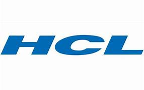
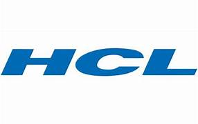
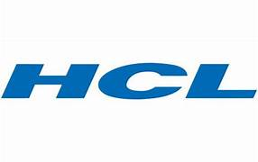

Placement Highlights
Our MCA students have been successfully placed in top MNCs and startups with excellent salary packages.
We prepare our students through training, internships, and real-time project exposure.
Top Recruiters
 

Narayana Educational Institutions are one of the best education providers in India from the Pre-primary to professional post graduation. Narayana Educational Group was established by renowned educationalist Dr P Narayana, 44 years ago. Today, the Narayana Educational Institutions stand tall and proud for setting path breaking benchmarks in academic excellence. Four decades of experience in fulfilling the aspirations of India's students has given us conviction and confidence to aim higher and bigger always. In promoting professional colleges from this group, Narayana Engineering College Nellore (NECN) was established in 1998. Now, ours is one of the premier Engineering Colleges in the self-financing category in Andhra Pradesh. College is locating in Nellore city, which is famous for Paddy crop and is also called city of Education. Institution has well equipped built up area with impressive infrastructure like state of art Laboratories, class rooms, tutorial rooms, library, drawing halls, seminar halls etc are available to provide conducive environment for academic activities.
Our MCA students have been successfully placed in top MNCs and startups with excellent salary packages.
We prepare our students through training, internships, and real-time project exposure.
